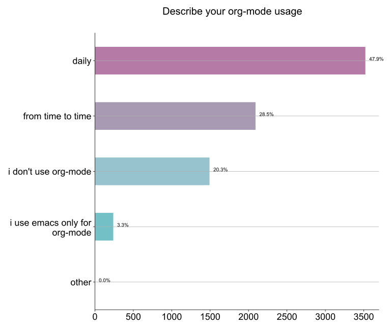
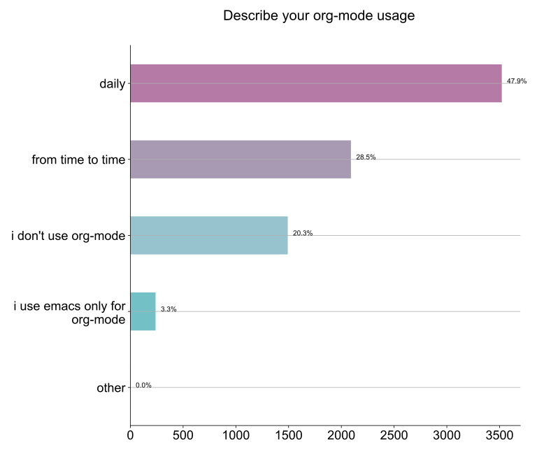
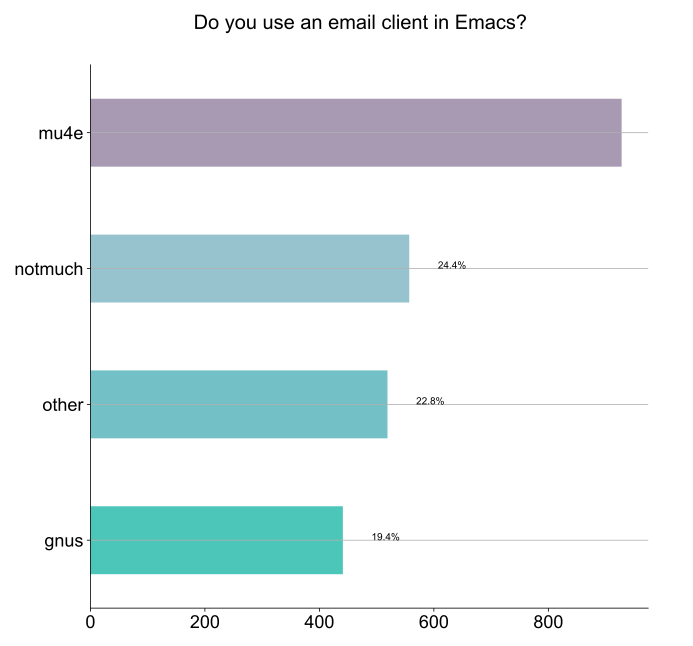
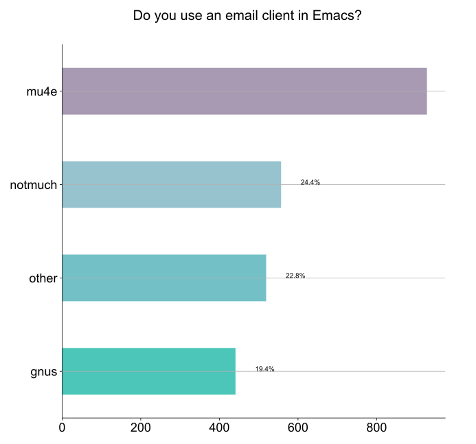

Questions
For reference, this was the survey questions in org-mode format.
Data
-
Raw data
- the reconciled data from both webform and email submissions
- absolutely no change made aside from a few instances where PII and email addresses were redacted
-
Cleaned up data
It might get updated in the future, but right now it was derived from the raw data in a best-effort attempt:- removed negative years in "For how many years have you been using Emacs?"
- unified responses for "How did you hear about this survey?" as Hacker News, Emacs China and Emacs News weren't part of the options
- unified responses for "Which theme do you use?", especially around spelling
- general cleanup and unified of responses which only differed by punctuation and casing
Statistics about the survey
- 7344 total responses across webform & email
- 7240 webform responses
- 103 emails
- 30% of webform submissions were on mobile device
- average webform completion time was 11 minutes
- survey opening announcement trending to the top 100 of Hacker News generated a sudden spike in submissions
Analysis
There is a lot of data to look at in many different ways. For now, I performed a simple question-by-question analysis using a Jupyter Notebook.
Also, since free text was available for most questions, it can be hard to categorize some of the results. For multiple choice questions, I did a best effort attempt to bundle responses with low cardinality into an "other" section, which can get quite big in some cases! I also did not attempt to graph anything for pure free text questions. I encourage anyone who is curious to inspect the full responses, either in the notebook or looking at the data directly. The omitted free text questions are:
- If you use org-mode, for what purpose?
- Do you use a language server with lsp-mode or eglot? With what languages?
- Do you use an Emacs debugger interface? What do you use? (Gdb, dap-mode etc)
- What are some of the Emacs improvements you are the most interested in?
- What do you think are Emacs' greatest strengths?
- Can you recall any difficulties you faced initially learning Emacs?
- What is the one thing you would like Emacs to do differently?
- If there is another survey in 2021, would you be opposed to it containing optional & general demographics questions?
- Do you have a preferred platform for filling out the survey in the future?
- Do you have general feedback about the survey process?
Also if you have some cool analysis and want to share it, please let us know and we can link to you.


 


 
